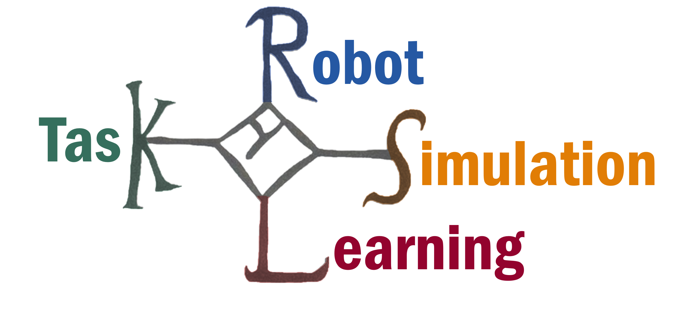

KAROLOS
KAROLOS (Open-Source Robot-Task Learning Simulation) is an open-source simulation and reinforcement learning suite.

KAROLOS was developed with a focus on:
-
scalability: As reinforcement learning algorithms require significant amounts of experience, KAROLOS enables the parallelization of environments. This way, you spend less time on data collection and more time on training and prototyping.
-
modularization: More and more research in reinforcement learning is looking into the transfer of agents from one environment to another. KAROLOS was developed to quickly generate environments with different robot-task combinations.
KAROLOS is still under active development. We encourage you check back regularly.